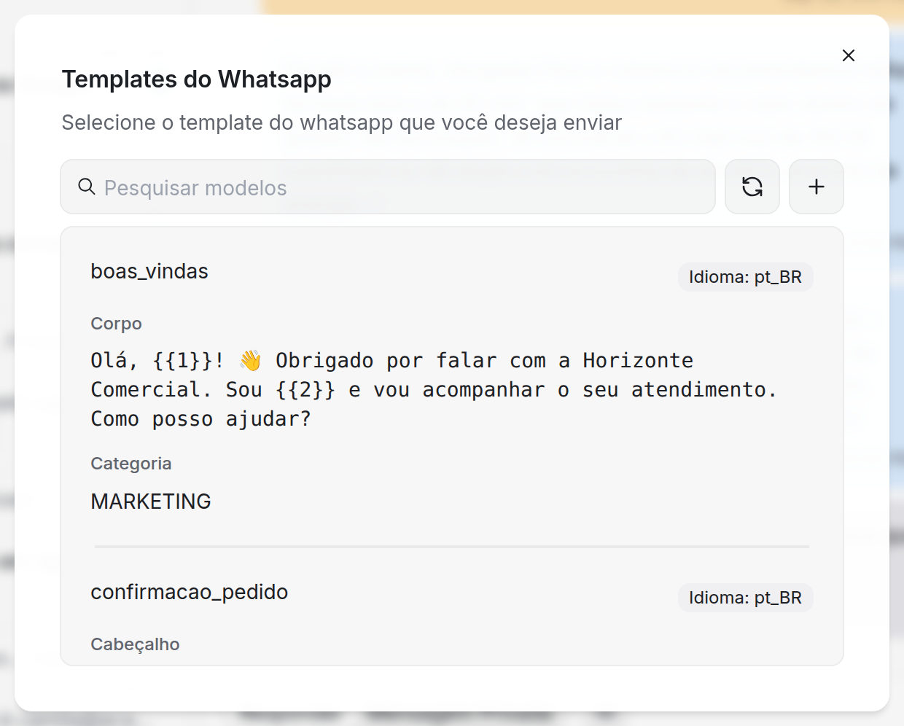
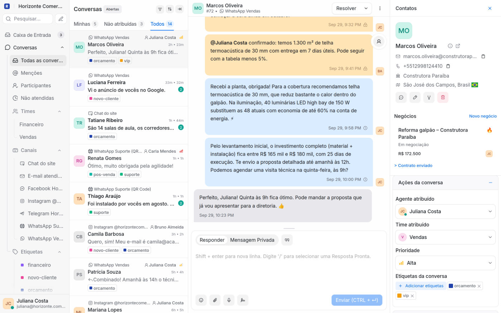
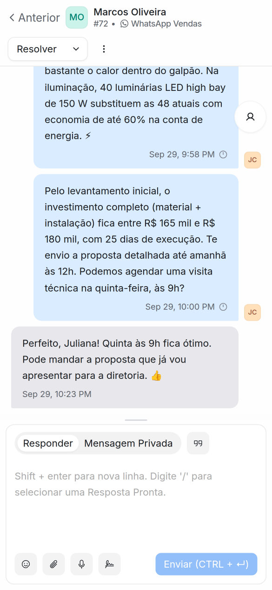
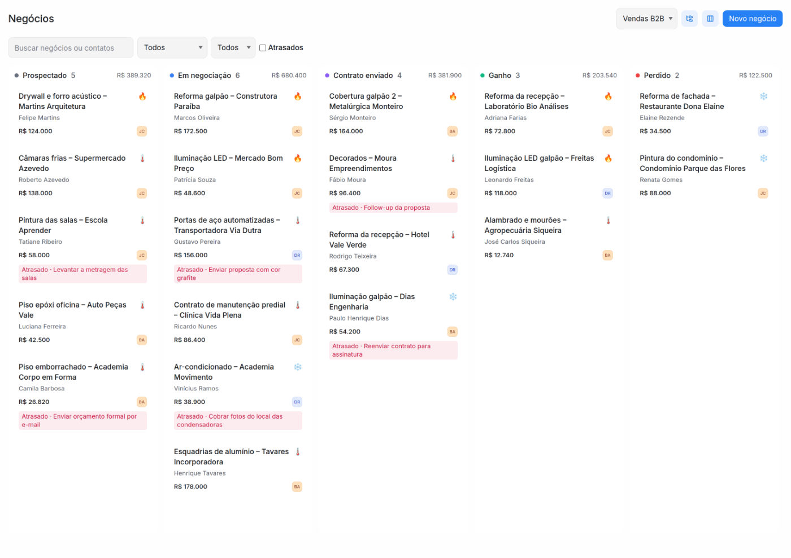
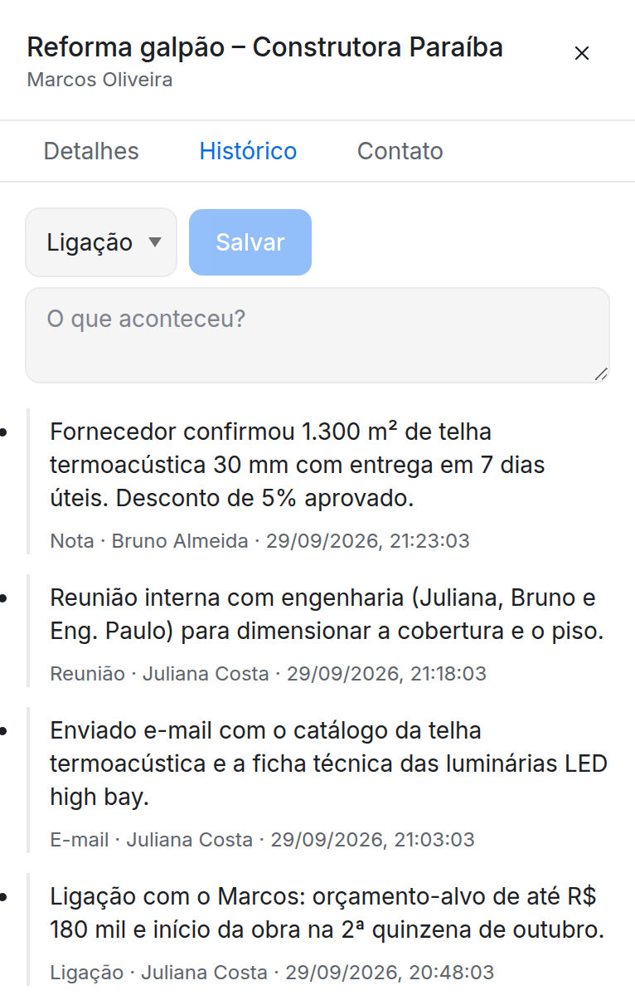
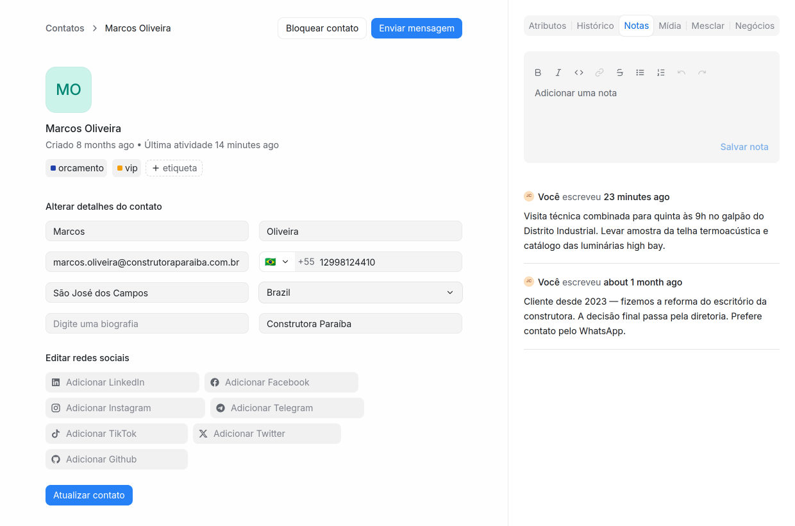
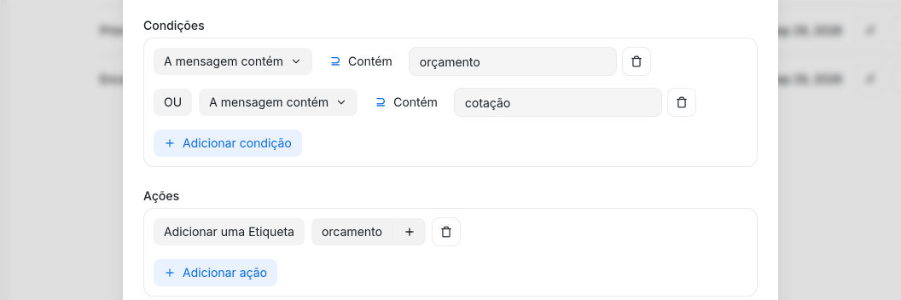
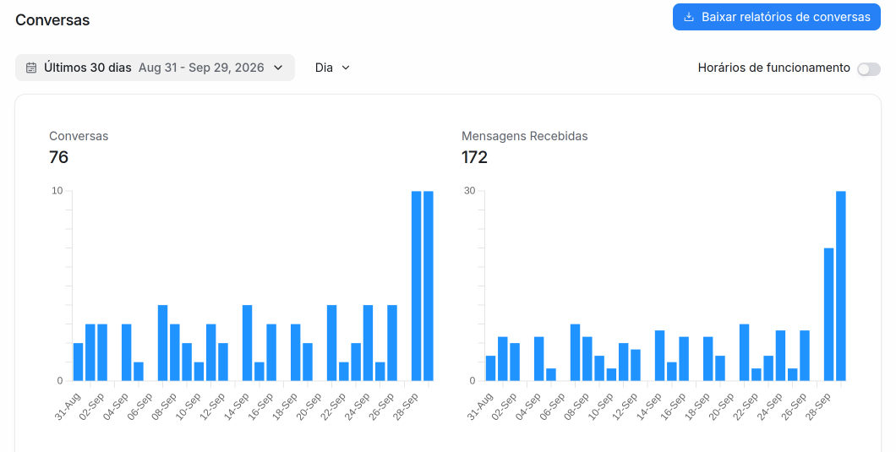
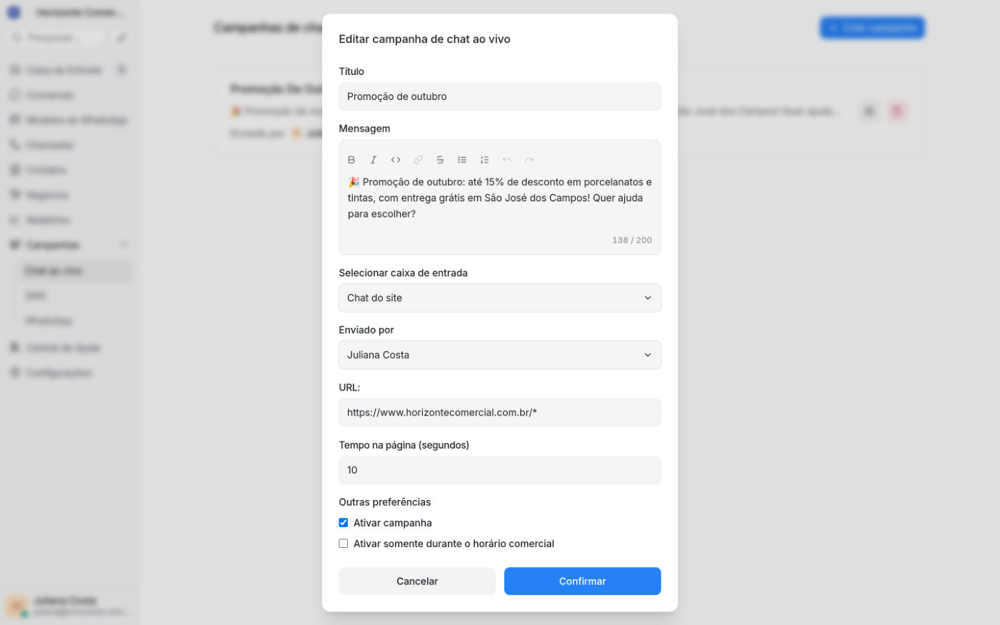
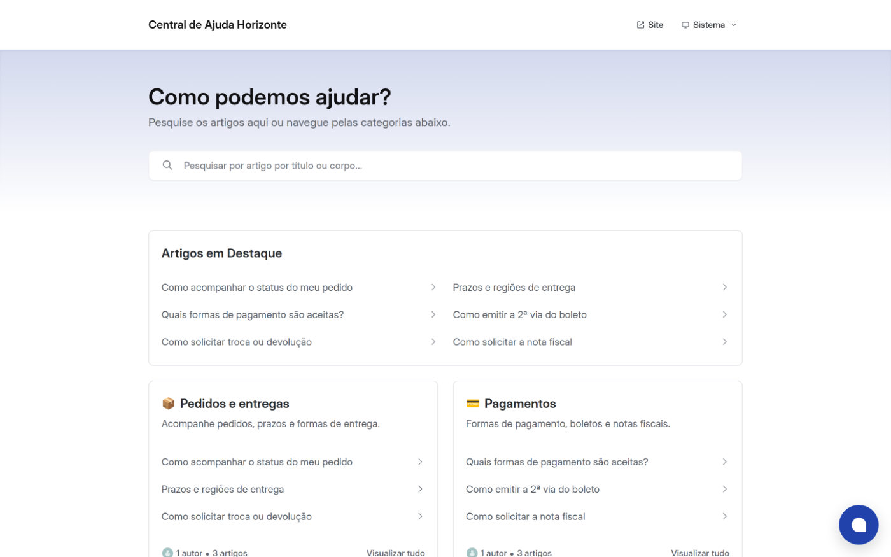

RADISA CRM
Atendimento, vendas e relacionamento com o cliente em uma única plataforma
WhatsApp, Instagram, e-mail, chat do site e outros canais numa só caixa de entrada,
com funil de vendas, automações e agentes de IA sob medida, desenvolvidos pela Fabersoft para trabalhar junto com a sua equipe.
Atender, vender e acompanhar cada cliente no mesmo lugar
O Radisa CRM reúne as conversas de todos os canais, a base de contatos e o funil de vendas da
empresa. A equipe responde mais rápido, nenhuma oportunidade se perde e o gestor acompanha
tudo com números.
10
canais conectados de forma nativa
1
caixa de entrada para toda a equipe
100% web
no computador ou no celular, sem instalar nada
Atender
Caixa de entrada unificada
WhatsApp, Instagram, Facebook, e-mail, chat do site e outros canais chegam numa única tela, com o histórico completo de cada cliente.
Vender
Funil de vendas integrado às conversas
Durante a conversa, o vendedor cria um negócio para o cliente no funil, com valor, etapa, responsável e próxima ação, sem sair da tela de atendimento.
Automatizar
Automações e IA sob medida
Regras automáticas, distribuição de conversas e respostas prontas cuidam do trabalho repetitivo, e a Fabersoft desenvolve agentes de IA sob medida para a sua operação.
Acompanhar
Relatórios e satisfação do cliente
Tempo de resposta, volume de atendimentos, desempenho por atendente e pesquisa de satisfação para decidir com dados.
Integrações nativas
Todos os canais do seu cliente em uma única caixa de entrada
Cada canal é conectado de forma nativa: as mensagens chegam e são respondidas dentro do
Radisa CRM, sem alternar entre aplicativos e sem copiar e colar.
WhatsApp não oficial
Conexão por QR Code
Conecte o número que a empresa já usa lendo um QR Code no celular, sem aprovação da Meta.
WhatsApp oficial
API oficial da Meta
Número oficial da empresa, modelos de mensagem aprovados e envio em escala dentro das regras da Meta.
Instagram oficial
Direct pela API da Meta
Mensagens do Direct, respostas e menções em stories chegam direto no painel da equipe.
Outros canais nativos
Facebook Messenger
Conversas da página da empresa na fila de atendimento.
E-mail
Gmail, Outlook ou qualquer provedor, como fila compartilhada.
Chat do site
Balão de atendimento com as cores e os textos da sua empresa.
Telegram
Bot da empresa conectado em segundos.
SMS
Mensagens de texto para avisos e cobranças, via Twilio.
LINE
Conta oficial do LINE no mesmo painel.
Canal via API
App ou sistema próprio da empresa enviando mensagens.
Sob medida
A Fabersoft conecta outros canais e sistemas pela API.
Não importa por onde o cliente fale: tudo fica registrado no perfil do contato, e cadastros
duplicados de canais diferentes são unificados em poucos cliques.
Histórico completo de cada cliente
WhatsApp
WhatsApp oficial e não oficial, lado a lado
Cada empresa escolhe a conexão que faz sentido para a sua operação, ou usa as duas ao mesmo
tempo, em canais separados, atendidos pela mesma equipe.
Não oficial · QR Code
Conecte o número que você já usa
Basta ler um QR Code no celular, como no WhatsApp Web. Sem aprovação da Meta e sem burocracia: ideal para começar a atender rápido.
Pareamento por QR Code, com status da conexão
As respostas da equipe saem pelo próprio número
Ideal para o atendimento do dia a dia; para envios em massa, use a API oficial
Oficial · API da Meta
Número verificado e mensagens em escala
Conexão direta com a API oficial do WhatsApp Business, dentro das regras da Meta.
Imagens, áudios, vídeos, documentos e localização
Modelos aprovados para retomar o contato após 24 horas
Painel de saúde: qualidade, limite de envio e verificação
Modelos de mensagem sem sair do CRM · WhatsApp oficial

Modelos na conversaEscolha, preencha e envie.
Criar e excluir modelos direto na plataforma, sem abrir o painel da Meta.
Status de aprovação de cada modelo acompanhado na lista.
Botão de modelos na barra de resposta: o atendente escolhe, preenche as variáveis e envia.
Novo modelo no meio da conversa (administradores), enviado para aprovação sem trocar de tela.
Variáveis personalizadas, como nome do cliente e número do pedido.
Mensagem de erro da Meta na tela quando o modelo é recusado no envio, para corrigir na hora.
Atendimento
Caixa de entrada compartilhada para toda a equipe
As conversas de todos os canais chegam numa única tela. Cada atendente vê o que é seu, o que
falta atender e quem é o cliente, sem trocar de aplicativo.

Conversa do WhatsApp com o painel do clienteHistórico, etiquetas, dados do contato e negócios em andamento na mesma tela.
Filas organizadas: minhas, não atribuídas, todas, menções e não atendidas.
Distribuição automática em rodízio entre os atendentes online.
Equipes como Vendas, Suporte e Financeiro, cada uma com sua fila.
Prioridade, pendência e adiamento com retorno automático à fila.
Anexos, áudio gravado no navegador e resposta citando mensagens.
Busca global por contatos, conversas, mensagens e artigos.
Produtividade
Menos cliques e respostas mais rápidas
Recursos que padronizam o atendimento e tiram o trabalho repetitivo das mãos da equipe, no
computador ou no celular.
Respostas prontas
Digite "/" e escolha o texto. O nome do cliente e outras variáveis são preenchidos sozinhos.
Macros
Um clique para etiquetar, atribuir, enviar mensagem, registrar nota e resolver a conversa.
Notas e @menções
A equipe combina o atendimento dentro da conversa, sem o cliente ver, e avisa o colega na hora.
Etiquetas coloridas
Classifique por assunto, como orçamento, VIP ou financeiro, e filtre com um clique.
Filtros e pastas
Combine status, atendente, canal, etiqueta e datas, e salve o filtro como pasta no menu.
Ações em massa
Resolva, atribua, adie ou etiquete várias conversas de uma vez nos picos de demanda.

Atendimento também pelo celular
A interface se ajusta a telas pequenas: o atendente responde pelo navegador do celular, sem instalar nada, com as mesmas funções do computador.
Notificações por e-mail, no navegador e com alerta sonoro.
Modo escuro e interface em português do Brasil.
Atalhos de teclado e barra de comandos para quem atende no computador.
CRM
Funil de vendas visual, do primeiro contato ao fechamento
Todas as oportunidades num quadro com uma coluna por etapa. Cada negócio avança arrastando o
cartão, e o gestor vê na hora quanto dinheiro há em cada fase.

Quadro de negóciosQuantidade e valor total por etapa, responsável, temperatura e próxima ação em cada cartão.
Vários funis, um para cada processo comercial, como B2B, varejo ou renovações.
Etapas sob medida: nomes, cores e ordem definidos pelo gestor.
Arrastar e soltar entre etapas, com totais atualizados na hora.
Selo de atrasado quando a próxima ação passa do prazo.
Motivo da perda registrado ao marcar um negócio como perdido.
Filtros por responsável, temperatura do lead e negócios atrasados.
CRM
Cada negócio com ficha, histórico e próxima ação
A negociação fica registrada na plataforma, não na cabeça do vendedor. Quem assume a negociação vê
o histórico completo e sabe exatamente qual é o próximo passo.

Histórico do negócioNotas, ligações, reuniões e e-mails, com autor e data.
Ficha completa
Valor em reais, dólar ou euro, e previsão de fechamento.
Responsável escolhido entre os vendedores da equipe.
Temperatura do lead: quente, morno ou frio.
Próxima ação com data e hora marcadas.
Histórico de atividades
Notas, ligações, reuniões e e-mails registrados na linha do tempo.
Registro automático das mudanças de etapa, temperatura e responsável, com autor e data.
Vendas e atendimento na mesma tela: durante a conversa, o atendente vê os negócios do cliente,
cria um novo ou avança a etapa com um clique, e vê quanto já foi fechado com aquele cliente.
Negócios no painel da conversa e no perfil do contato
Contatos
Uma base única de clientes, com todo o histórico
Todo cliente que fala com a empresa, por qualquer canal, entra numa só base. Acabam as planilhas
espalhadas, e o atendente sabe quem é o cliente antes de responder.

Perfil do contatoDados, etiquetas e notas internas; nas abas ao lado, histórico, mídias e negócios do cliente.
Campos personalizados, como CPF/CNPJ, plano ou data de renovação.
Segmentos salvos por cidade, etiqueta, atividade e outros critérios.
Importação e exportação por planilha, sem duplicar contatos.
Unificação de duplicados, juntando o histórico num contato só.
Notas internas sobre o cliente, visíveis só para a equipe.
Bloqueio de spam e de contatos indesejados com um clique.
Automação
Regras automáticas que trabalham pela equipe
Defina uma vez o que deve acontecer e o Radisa CRM executa sozinho, em todos os canais, sem
depender de alguém lembrar.
QuandoEvento
Uma conversa é criada, atualizada, aberta ou resolvida, ou chega uma nova mensagem.
SeCondições
Canal, status, prioridade, etiquetas, texto da mensagem, responsável, equipe, idioma, país e campos personalizados, combinados com E/OU.
EntãoAções
Atribuir atendente ou equipe, aplicar etiquetas, enviar mensagem ou nota interna, mudar prioridade ou status, enviar e-mail e acionar sistemas externos.
Mais automações nativas
Distribuição automática em rodízio entre os atendentes online.
Horário de atendimento com mensagem automática fora do expediente.
Saudação automática para quem escreve pela primeira vez.
Pesquisa de satisfação enviada ao encerrar o atendimento.
Encerramento automático de conversas paradas, com mensagem ao cliente.
Webhooks em tempo real para avisar o ERP e outros sistemas.

Editor de automaçõesExemplo: mensagem com “orçamento” ou “cotação” recebe a etiqueta automaticamente.
Inteligência artificial · Fabersoft
Agentes de IA sob medida, trabalhando dentro do Radisa CRM
A Fabersoft desenvolve agentes de IA que atendem, qualificam e resolvem demandas nos canais
conectados, integrados aos sistemas que a sua empresa já usa. Quando o assunto pede uma
pessoa, o agente transfere a conversa para a equipe, com todo o contexto.
O que um agente pode fazer
01
Atender 24 horas
Responde dúvidas frequentes a qualquer hora, com a linguagem da sua marca.
02
Qualificar leads
Faz as perguntas certas, registra as respostas e encaminha o lead à equipe de vendas.
03
Consultar sistemas
Busca pedidos, estoque, boletos ou agenda no seu sistema e responde na hora.
04
Executar ações
Agenda horários, gera segunda via de boleto, abre chamados e registra tudo no histórico.
05
Transferir para humanos
Passa a conversa para a equipe certa quando necessário, sem o cliente repetir nada.
06
Responder com base no seu conteúdo
Usa catálogos, políticas e a central de ajuda da empresa como base de respostas.
IA também no editor do atendente
Melhorar o texto e ajustar o tom: profissional, amigável, direto e outros.
Sugerir a resposta com base no histórico da conversa.
Corrigir gramática e ortografia antes de enviar.
Resumir a conversa e sugerir etiquetas automaticamente.
Os recursos de IA do editor exigem uma chave da OpenAI, contratada pela empresa e configurada na plataforma.
Integrações sob medida
ERP e sistemas de gestãoAgenda e reservasMeios de pagamentoPlanilhas e bancos de dadosE-commerceAPIs e webhooks
Cada agente é desenhado com a sua equipe: definimos objetivo, tom de voz, integrações e regras
de transferência antes de colocar em produção.
Serviço de desenvolvimento Fabersoft
Gestão
Indicadores de atendimento para decidir com dados
O gestor acompanha volume, velocidade e qualidade do atendimento, por atendente, equipe,
canal e etiqueta, sem montar planilhas.

Relatório de conversas · últimos 30 diasConversas e mensagens recebidas, dia a dia.
Primeira resposta
Quanto tempo o cliente espera pelo primeiro retorno da equipe.
Tempo de resolução
Da abertura ao encerramento de cada conversa.
Volume
Conversas e mensagens recebidas e enviadas por período.
Por atendente e equipe
Comparativo por atendente, equipe, canal e etiqueta.
Satisfação (CSAT)
Índice de satisfação, taxa de resposta e comentários.
Visão ao vivo
Conversas sem resposta, sem responsável e atendentes online.
Comparação automática com o período anterior.
Horário comercial: médias sem contar noites e fins de semana.
Mapa de calor dos horários de maior movimento.
Exportação em planilha (CSV) com um clique.
Relacionamento
Campanhas e central de ajuda para atender antes de o cliente perguntar
Além de responder, a empresa toma a iniciativa: dispara campanhas para públicos segmentados e
publica uma central de ajuda com o logo e as cores da empresa, reduzindo o volume de atendimentos.

Campanha no chat do siteMensagem por página e tempo de visita.
Campanhas
WhatsApp em massa pela API oficial, com modelos aprovados, para listas segmentadas por etiqueta.
Agendamento de data e hora, com o nome de cada cliente na mensagem.
Mensagem proativa no site para quem fica um tempo em páginas como a de preços.
SMS para avisos, cobranças e reativação de clientes.

Central de ajuda públicaPortal com o logo e as cores da empresa.
Central de ajuda
Artigos e categorias escritos e publicados pela própria equipe.
Logo, cores e domínio próprio, como ajuda.suaempresa.com.br.
Vários idiomas e otimização para o Google.
Artigos no atendimento: o atendente envia o link sem sair da conversa.
Integrações
Conectado aos sistemas que a sua empresa já usa
O Radisa CRM conversa com outros sistemas em tempo real. O que não vem pronto, a Fabersoft
integra sob medida pela API aberta da plataforma.
API aberta e webhooks
Seu ERP, loja virtual ou sistema próprio sabendo de tudo na hora
Cada nova conversa, mensagem ou contato pode avisar outros sistemas no mesmo instante, e esses
sistemas podem criar contatos, abrir conversas e enviar mensagens pela API.
10 eventos de webhook, com chave secreta para validar a origem
Automações e macros podem acionar sistemas externos em pontos específicos do atendimento
API REST com token de acesso para contatos, conversas, mensagens, relatórios e o funil de vendas
Dentro da conversa
Aplicativos no painel
Telas de outros sistemas, como pedidos ou financeiro do cliente, abertas ao lado da conversa, sem trocar de janela.
Bots
Robôs com transferência
Bots próprios ou do Dialogflow fazem o primeiro atendimento e passam a conversa para a equipe quando necessário.
Integrações disponíveis
WebhooksAPI RESTAplicativos no painelDialogflowOpenAIGoogle TradutorSlackVideochamadasWhatsApp oficial (Meta)WhatsApp por QR CodeInstagram e Facebook (Meta)E-mail Google e Microsoft
Precisa ligar o atendimento ao seu ERP, agenda ou meio de pagamento? A Fabersoft desenvolve a
integração e os agentes de IA que usam esses dados para responder ao cliente.
Integrações sob medida Fabersoft
Segurança e controle
Cada pessoa vê o que precisa, e a empresa controla tudo
Perfis de acesso, verificação em duas etapas e histórico completo de cada cliente mantêm a
operação organizada e os dados sob controle da empresa, não de cada atendente.
Dois perfis de acesso
Administradores configuram a operação e veem os relatórios; atendentes trabalham só nos canais aos quais foram adicionados.
Verificação em duas etapas
Login com código do aplicativo autenticador e códigos de backup, com os segredos guardados criptografados.
Proteção contra invasão
Senhas fortes obrigatórias, confirmação de e-mail e bloqueio automático de tentativas repetidas de login.
Sessões ativas
Cada usuário vê em quais navegadores e dispositivos está conectado e encerra remotamente qualquer sessão suspeita.
Várias empresas, uma plataforma
Contas separadas para empresas ou unidades diferentes, cada uma com sua equipe, canais e dados.
Controle dos dados do cliente
Exportação, unificação e exclusão de contatos pelos administradores, para atender pedidos dos titulares.
Conversas, notas e negócios ficam registrados na plataforma: quando alguém sai da equipe, o
histórico e o conhecimento sobre cada cliente continuam com a empresa.
Os dados são da empresa, não do atendente
Fabersoft
Implantação e suporte de quem desenvolve a plataforma
O Radisa CRM é desenvolvido e mantido pela Fabersoft. A mesma equipe que evolui o produto
acompanha a sua empresa, da configuração inicial ao dia a dia da operação. Tudo funciona pelo navegador: a Fabersoft cuida da configuração, das atualizações e do suporte.
Etapa 1Diagnóstico
Entendemos a sua operação
Canais de atendimento, equipes, processo de vendas e metas de atendimento.
Etapa 2Configuração
Deixamos a plataforma pronta para usar
Conexão do WhatsApp, Instagram, e-mail e demais canais; criação de equipes, etiquetas, funis de venda, respostas prontas e automações.
Etapa 3Treinamento
Capacitamos atendentes e gestores
Cada perfil aprende a usar o que precisa: atendimento, vendas no funil e leitura dos relatórios.
ContínuoSuporte
Suporte na plataforma, em português
Atendimento da equipe Fabersoft para dúvidas e ajustes, atualizações do sistema e evolução junto com o seu negócio.
Suporte especializado
Quem responde é a equipe que conhece o código da plataforma, não um atendimento genérico.
Desenvolvimento sob medida
Novas funcionalidades, integrações e agentes de IA construídos para a realidade da sua empresa.
Próximos passos
Vamos colocar o Radisa CRM para trabalhar na sua empresa
Agende uma demonstração e veja a plataforma funcionando com os canais e o processo de vendas
da sua operação.
Passo 1 · Demonstração
Uma apresentação ao vivo do Radisa CRM com os canais e o processo de vendas da sua empresa
Passo 2 · Proposta sob medida
Canais, número de usuários, integrações e agentes de IA dimensionados para a sua operação
Passo 3 · Implantação
Configuração, treinamento e suporte da Fabersoft do primeiro dia em diante